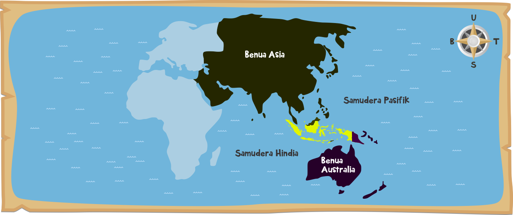
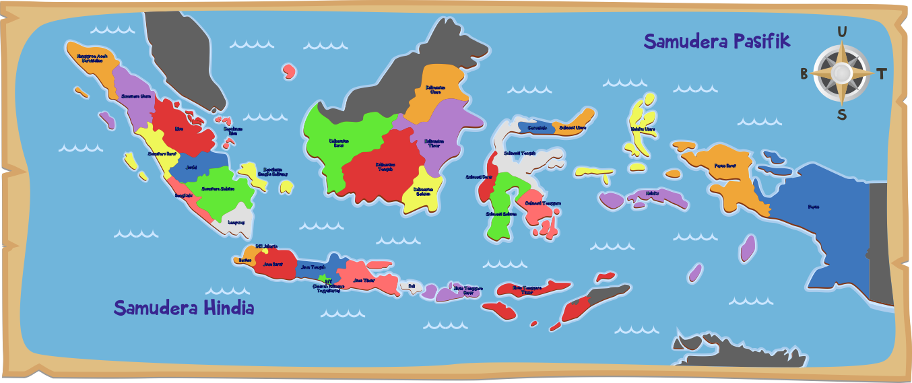

Negara yang terdiri atas beribu-ribu pulau yang tersebar dari Sabang sampai Merauke. Pulau-pulau yang tersebar di kawasan Indonesia itu berjumlah sekitar 13.000 pulau. Indonesia juga memiliki lebih dari 400 suku bangsa. Wilayah kepulauan Indonesia itu bersatu di dalam kedaulatan negara Indonesia, sehingga negara kita ini merupakan Negara Kesatuan Republik Indonesia (NKRI).
Negara Indonesia membentang dari Sabang di Provinsi Nanggroe Aceh Darussalam sampai Merauke di wilayah Papua. Secara geografis, Indonesia terletak pada 6° Lintang Utara (LU) hingga 11° Lintang Selatan (LS), dan 95° Bujur Timur (BT) hingga 141° Bujur Timur (BT).
Sumber Gambar:
http://99gambar.blogspot.co.id/2014/06/gambar-peta-letak-geografis-indonesia.html
Negara Indonesia terletak di wilayah Asia Tenggara. Wilayah Indonesia diapit oleh dua benua, yaitu Benua Asia dan Benua Australia. Wilayah Indonesia juga diapit oleh dua samudra, yaitu Samudra Hindia dan Samudra Pasifik.

Indonesia memiliki luas wilayah sekitar 5.193.252 km², dengan wilayah daratan sekitar 1.904.569 km² dan wilayah lautan sekitar 3.288.683 km². Coba kamu bayangkan betapa luasnya wilayah negara Indonesia tercinta ini. Indonesia merupakan negara terluas di kawasan Asia Tenggara.
Luas wilayah Indonesia yang begitu besar ini jika diukur dari batas wilayah barat sampai timur memiliki panjang sekitar 5.110 km. Sedangkan jika diukur dari batas wilayah utara sampai batas wilayah selatan sekitar 1.888 km Dengan wilayah yang sangat luas ini, negara Indonesia dibagi menjadi tiga wilayah waktu.

Pembagian wilayah waktu di Indonesia terdiri atas Waktu Indonesia Bagian Barat (WIB), Waktu Indonesia Bagian Tengah (WITA), dan Waktu Indonesia Bagian Timur (WIT). Setiap perbedaan waktu memiliki selisih waktu satu jam. Jika di Kota Medan waktu menunjukkan pukul 08.00, maka di Kota Denpasar menunjukkan pukul 09.00, sedangkan di Kota Ambon sudah menunjukkan pukul 10.00. Coba perhatikan kota lainnya di peta!